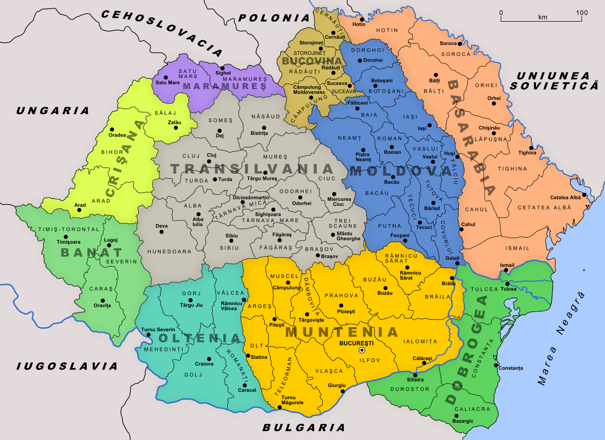
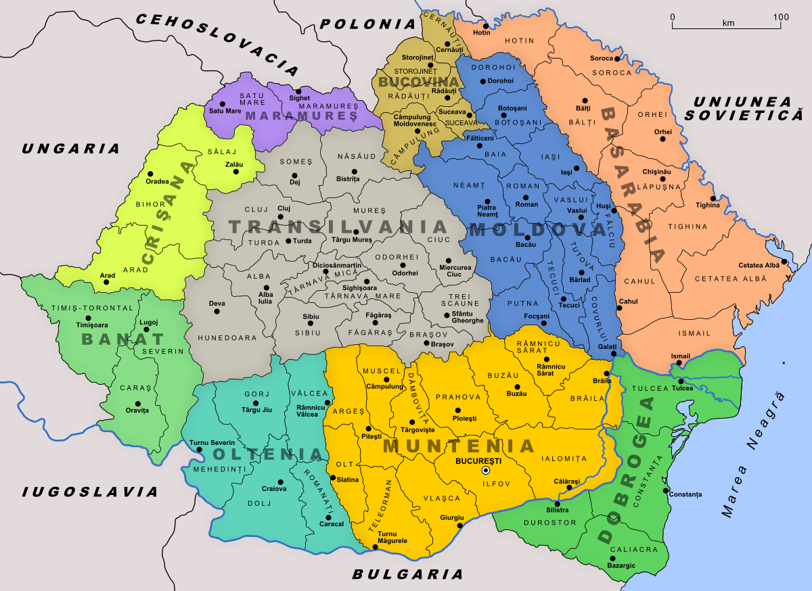

Romania
13.09.2021
România este un stat situat în sud-estul Europei Centrale, pe cursul inferior al Dunării, la nord de peninsula Balcanică și la țărmul nord-vestic al Mării Negre.[7] Pe teritoriul ei este situată aproape toată suprafața Deltei Dunării și partea sudică și centrală a Munților Carpați. Se învecinează cu Bulgaria la sud, Serbia la sud-vest, Ungaria la nord-vest, Ucraina la nord și est și Republica Moldova la est, iar țărmul Mării Negre se găsește la sud-est.
De-a lungul istoriei, diferite porțiuni ale teritoriului de astăzi al României au fost în componența sau sub administrația Daciei, Imperiului Roman, a unor popoare migratoare, a Imperiului Otoman, Imperiului Rus, Imperiului Austriac și a celui Austro-Ungar.
În perioada Imperiului Roman, romanii au numit regiunea unde se află actualul stat maghiar Panonia, care ulterior a primit numele geografic de Panonia. Înaintea romanilor partea panonică estică s-a găsit frecvent sub dominația regatelor geto-dace care rivalizau cu celții central-europeni (perioada regelui Burebista). Primii migratori care au invadat în evul mediu Câmpia Panonică au fost hunii, conduși de Attila, care uneori au făcut alianță cu Imperiul Roman, acesta folosindu-i în luptele împotriva galilor. După moartea lui Attila în 453 a urmat dezintegrarea militară a hunilor. Au fost apoi definitiv înlăturați de către gepizi, triburi germanice, care au pus stăpânire pentru circa o sută de ani pe estul acestui teritoriu. Aceștia au dominat Bazinul Panonic la est de Dunărea de Mijloc de-a lungul Tisei și nord-vestul Transilvaniei (Someșul de Jos). Ei vor fi înlăturați în 567 de către avari și longobarzi, avarii fiind o populație turcică asiatică veniți peste Carpați pe calea Nistru - Pasul Verețki - Tisa, iar longobarzii, triburi germanice venite din nord (regiunea slovacă). Avarii vor avea aici, centrată pe regiunea „Dunărea de Mijloc - Tisa”, o formație statală până la sfârșitul sec. VIII (anul 796), când francii vor distruge taberele principale avare dintre Dunăre și Tisa.
În timpul celui de-Al Doilea Război Mondial (în 1940), sub presiunea Germaniei Naziste, România Mare a cedat teritorii Ungariei (nord-estul Transilvaniei), Bulgariei (Cadrilaterul) și Uniunii Sovietice (Basarabia, Herța și Bucovina de Nord). Sub dictatura lui Ion Antonescu România s-a lansat într-un război pentru care nu era pregătită și în care au murit circa 600.000 de soldați români.
După abolirea dictaturii lui Antonescu la 23 august 1944, România s-a retras din alianța cu Puterile Axei, trecând de partea Puterilor Aliate (Regatul Unit, Statele Unite, Franța și Uniunea Sovietică). Prin Tratatul de pace de la Paris semnat la 10 februarie 1947, din teritoriile cedate ale fostei Românii Mari, a fost recuperată Transilvania de Nord.
După înlăturarea regimului comunist instalat în România (1989) și după destrămarea Uniunii Sovietice (1991), statul a inițiat o serie de reforme economice și politice. România a introdus reforme economice de ordin general (precum cota unică de impozitare, în 2005) și a aderat la alianța politico-militară NATO la 29 martie 2004 și la Uniunea Europeană la 1 ianuarie 2007.
România este o republică semi-prezidențială. Este al nouălea stat după suprafața teritoriului (238.397 km²) și aך șaselea după numărul populației (peste 20 milioane locuitori)[8] dintre statele membre ale Uniunii Europene. Capitala țării, București, este și cel mai mare oraș al acesteia și al șaselea oraș din UE după populație (1,9 milioane locuitori). A fost rândul României să desemneze un oraș drept Capitală Europeană a Culturii, pentru 2007, fiind ales Sibiul,[9] și pentru 2021, fiind aleasă Timișoara.[10] România este membră a unor organizații internaționale, printre care: ONU din 1955, CoE din 1993, Uniunea Europeană de la 1 ianuarie 2007, NATO din 29 martie 2004, OSCE, OIF din 2003, Uniunea Latină din 1980, și unor instituții economice: Grupul Băncii Mondiale, FMI din 1972, BERD din 1991; și este candidată la aderarea la OCDE.[11]